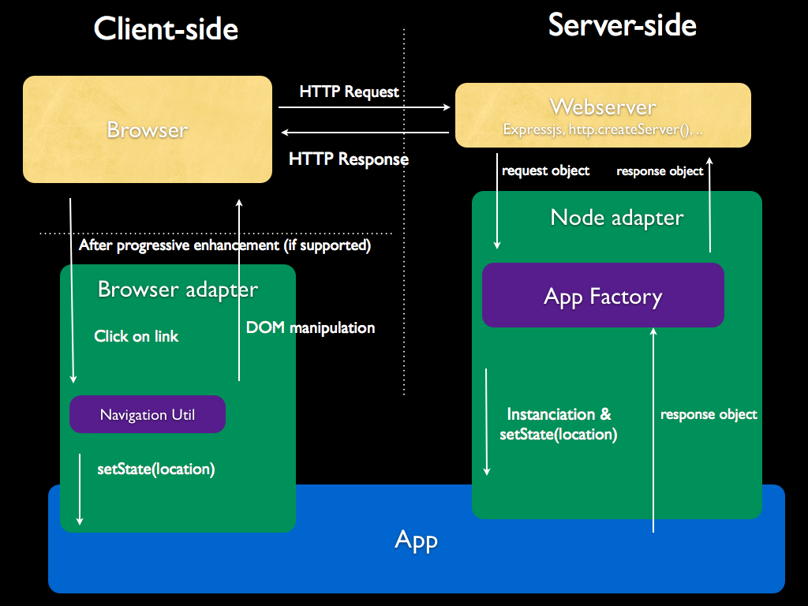

This adapter is used to make applications run on servers or embedded devices.
The following are only two examples of use cases. Expect more to come from Joshfire or from the community.
Usage of JavaScript on the server side with Node.js is currently exploding. One of its most powerful prospects is to share code between client and server. This feature has been planned since the early stages of the framework and is completely integrated in its design thanks to the Node.js adapter.
An incoming request from the client goes through a few components in this order:
http.createServer() method
or any other webserver code.app.setState() call to set
the current environment (request URI, headers, ...)Once the client has received the page from the server, you can also run the application client-side, depending
on the capabilities of the browser. The Navigation Util from the Browser adapter
will then intercept clicks on links and perform the same app.setState() that the App Factory does.
This design allows the Browser connector to change pages just by manipulating the DOM, like "single-page" apps do. This will bring all the benefits of such apps like responsiveness and improved user experience, while the Node.js connector solves all their usual issues by still being able to generate individual pages server-side (SEO, Old/specific browsers without JavaScript support, accessibility, ...). See Sylvain Zimmer's slides on this topic.
Let's zoom on what is happening inside the App itself when processing the request.
state.location events on the app. manager.setState(route) call.In the Browser adapter, the actual rendering of all the UI Elements of the UI Tree is done with simple
progressive DOM manipulation.
However it is a bit more complex with the Node.js adapter because the adapter needs to know
when all the components are fully rendered and not in a "loading" state anymore.
All the UI Elements can signal their "freshness" with a uielement.setState('fresh',true); call,
meaning that they are in a state that can be immediately serialized with uielement.getHtml() and sent
to the client.
The page will be serialized and sent to the client when all the displayable elements of the UI Tree are marked as "fresh".
The first public example is this website, which can be generated both from the server and the client sides.
It is open source on GitHub so that you can learn from it.
Expect many more to come in the next few weeks.
Thanks to its HTTP Input, the Node.js adapter can receive requests and convert them to internal events.
These events can then be either processed locally by the application or sent again over the network, for instance to another application running in a browser via websockets (supporter in the Browser adapter's own HTTP Input).
The videolist example has an Arduino controller that works as described above.